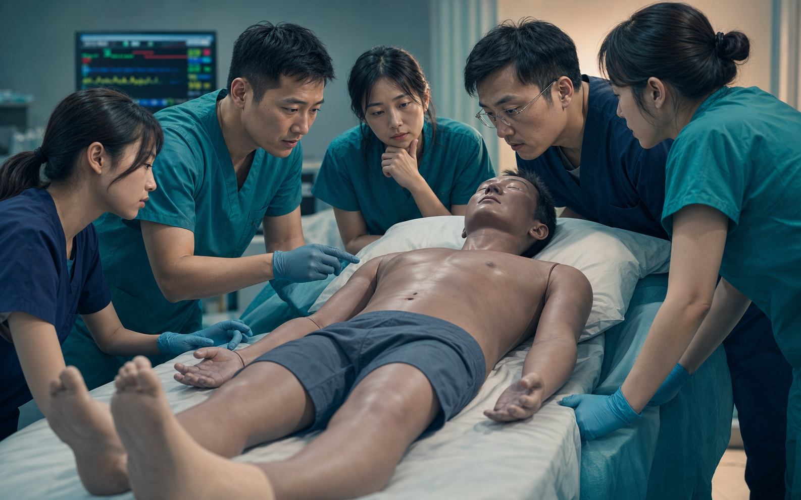
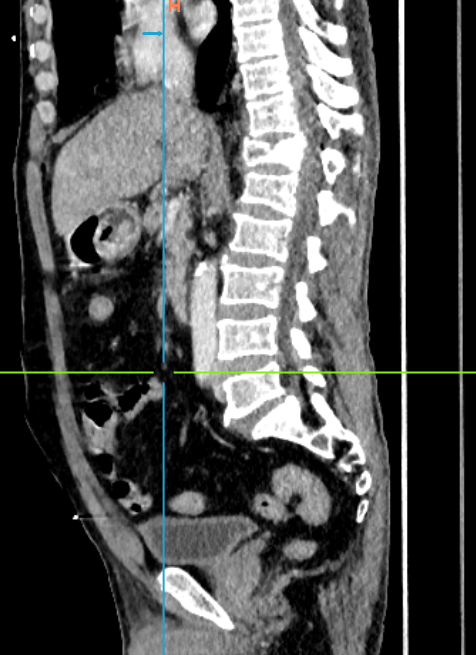
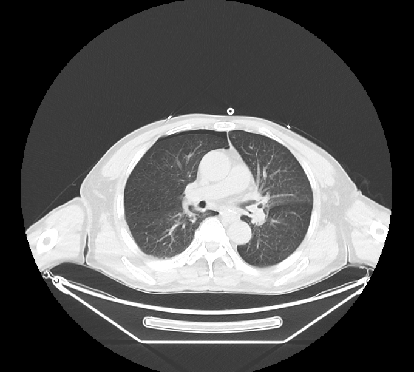

64 岁男性，骑三轮车时摔倒并滚入路边草丛，约半小时后到院。环境暴露最初没有进入主要问题表征。A 64-year-old man fell from a tricycle and rolled into roadside grass, arriving about 30 minutes later. Environmental exposure was not initially prominent in the problem representation.
CASE-TRAUMA-004 · INTERACTIVE CLINICAL REASONING CASE
多发伤与休克：不要停止再评估Polytrauma and Shock: Do Not Stop Reassessing
这是一例“生理严重度大于影像出血负荷”的休克病例。学习者必须一边复苏，一边判断多发骨折、小量胸部损伤是否足以解释持续低血压、低氧、嗜睡与乳酸升高，并在新病史出现后及时重写休克机制。This is a shock case in which physiologic severity exceeds the visible hemorrhage burden. Learners resuscitate while asking whether fractures and small thoracic injuries explain persistent hypotension, hypoxemia, drowsiness, and elevated lactate, then rewrite the shock mechanism when new history emerges.
原始病例重建Source-case reconstruction混合性休克推理Mixed-shock reasoning复苏与诊断并行Resuscitation + diagnosis
Physiology → injury map → mismatch → new mechanism关键线索图Key-cue visual

病例全景：先把完整病史放在桌面上Case Panorama: Put the Whole History on the Table
以下内容按原始 Word 病例与用户补充重建；精确日期、机构和人员信息已移除。The following reconstruction integrates the source Word case and user addendum; exact dates, institution, and staff identifiers are removed.
HR 124/min、BP 85/57 mmHg、RR 27/min、SpO₂ 88%，嗜睡、精神萎靡但对答尚切题。HR 124/min, BP 85/57 mmHg, RR 27/min, SpO₂ 88%; drowsy and fatigued but still answering appropriately.
胸腹压痛、右肩活动受限、右肘擦伤，无与休克程度相称的明显外出血；后续仔细视诊见面颈及躯干色泽较肢端深。Chest and abdominal tenderness, restricted right shoulder, and elbow abrasion, without external bleeding proportionate to shock; closer inspection later finds darker face, neck, and trunk relative to distal limbs.
用户补充：FAST 未见明确腹腔游离液，胸腔未见明显积液。阴性结果降低相应腔隙大量积血的可能，但不能单独排除早期、少量或腹膜后出血。User addendum: FAST showed no clear intraperitoneal fluid and no substantial pleural fluid. This lowers the likelihood of large cavity blood collections but does not exclude early, small-volume, or retroperitoneal bleeding.
pH 7.335、BE −7.2 mmol/L、乳酸 6.8 mmol/L；纤维蛋白原 1.84 g/L，D-二聚体及 FDP 升高。pH 7.335, base excess −7.2 mmol/L, lactate 6.8 mmol/L; fibrinogen 1.84 g/L with elevated D-dimer and FDP.
右锁骨、肩胛骨、双侧多发肋骨、T12及腰椎横突骨折，右侧少量气胸及少量胸腔/心包积液；未显示与休克程度相称的实质脏器大出血。Clavicle, scapular, bilateral rib, T12, and lumbar transverse-process fractures, with a small right pneumothorax and small pleural/pericardial fluid; no solid-organ hemorrhage proportionate to shock.
记录显示紧急骨髓腔通路、两路静脉、加压补液、血管活性支持及随后深静脉置管；多专科同步会诊。The record describes emergency intraosseous access, two venous lines, pressurized fluids, vasoactive support, later central venous access, and parallel specialty consultation.
后续记录补充：跌入草丛后曾出现全身红斑；给予糖皮质激素后红斑渐退，血压与意识逐步改善，皮肤科考虑过敏相关分布性休克。Later documentation adds generalized erythema after the fall into grass. Erythema faded and blood pressure and mental status gradually improved after a resuscitation bundle that included corticosteroid; dermatology considered allergy-related distributive shock.
因果边界Causal boundary
血压在补液、血管活性支持、氧合处理、通路建立和糖皮质激素之后恢复，不能据此证明“地塞米松纠正了休克”。严重过敏反应指南把肾上腺素列为一线，糖皮质激素仅为证据不确定的辅助治疗。Recovery followed fluids, vasoactive support, oxygenation care, vascular access, and corticosteroid, so the case cannot prove that dexamethasone reversed shock. Anaphylaxis guidance places epinephrine first-line; corticosteroids are adjunctive with uncertain evidence.
T36.5℃到院记录arrival
HR124 /min心率增快tachycardia
BP85/57mmHg
RR27 /min呼吸增快tachypnea
SpO₂88%低氧信号hypoxemia signal
Lactate6.8mmol/L
Opening task · Initial synthesis
第一分钟：先确认严重度，不急着命名病因First minute: establish severity before naming etiology
请用“已知—担心—未解释”写出初始问题表征，并列出需要并行排查的休克机制。Write an initial representation using known–concern–unexplained, then list shock mechanisms requiring parallel assessment.
参考表征：64 岁男性草丛环境暴露后发生多发伤，到院即有 B/C/D 轴异常和明确组织低灌注；目前无明显外出血，仍须立即排除隐匿出血、张力性气胸/心包压塞等可逆致死原因，同时解释低氧、中央皮肤色泽改变与损伤负荷不匹配。Reference: a 64-year-old man with polytrauma after environmental grass exposure arrives with B/C/D abnormalities and clear tissue hypoperfusion. With no obvious external bleeding, occult hemorrhage and reversible lethal causes such as tension pneumothorax or tamponade still require immediate exclusion while explaining hypoxemia, central skin-color change, and mismatch with injury burden.
信息逐步释放：每一轮都要重写问题表征Progressive Release: Rewrite the Representation Each Round
不是等待检查“公布答案”，而是观察哪条信息改变了当前休克机制的权重。Do not wait for a test to announce the answer; identify which finding changes the weight of each shock mechanism.
课堂进度Class progress已提交：Submitted: 0已释放：Released: 010 轮信息10 rounds
骑三轮车摔倒后滚入路边草丛，约半小时后到院。此时既要追问撞击能量与受力部位，也要询问昆虫叮咬、植物/农药接触、皮肤与呼吸道症状。He fell from a tricycle and rolled into roadside grass, arriving about 30 minutes later. Ask both about impact energy and about stings, plant or chemical exposure, skin change, and respiratory symptoms.
哪一部分属于创伤机制，哪一部分属于潜在触发物史？What belongs to trauma mechanism, and what belongs to potential trigger history?
病史入口History entryT 36.5℃、HR 124/min、RR 27/min、BP 85/57 mmHg、SpO₂ 88%；嗜睡、精神萎靡但对答尚切题。T 36.5℃, HR 124/min, RR 27/min, BP 85/57 mmHg, SpO₂ 88%; drowsy and fatigued but still answering appropriately.
哪些指标反映休克严重度，哪些不能单独告诉你休克类型？Which findings indicate shock severity, and which cannot identify shock type alone?
立即复苏Immediate resuscitation胸腹压痛、右肩活动受限、右肘擦伤；无明显外出血。进一步视诊发现面颈和躯干色泽较肢端深，需明确是潮红/红斑、发绀、低灌注花斑还是光线差异。Chest and abdominal tenderness, restricted right shoulder, and elbow abrasion, with no obvious external bleeding. Closer inspection finds darker face, neck, and trunk; clarify flushing or erythema, cyanosis, mottling, or lighting artifact.
如何把“看起来颜色深”转成可重复、可交接的查体事实？How do you convert “looks darker” into a reproducible handover finding?
描述而非命名Describe, do not label记录显示紧急骨髓腔及静脉通路、加压补液、血管活性支持、氧合监护和多专科会诊。此阶段不能等待最终病因才开始支持循环与呼吸。The record describes emergency intraosseous and venous access, pressurized fluids, vasoactive support, oxygenation monitoring, and parallel consultation. Circulatory and respiratory support cannot wait for final etiologic certainty.
你会用哪些床旁结果判断补液和血管活性支持是否有效？Which bedside responses would show whether fluids and vasoactive support are working?
行动后复评Reassess after action用户补充：腹腔未见明确游离液，胸腔未见明显积液。它回答“当前是否看见明显腔隙积液”，不能回答“是否完全没有出血”或“休克必然不是创伤相关”。User addendum: no clear intraperitoneal free fluid and no substantial pleural fluid. This answers whether major cavity fluid is visible now; it does not prove absence of bleeding or exclude trauma-related shock.
阴性 FAST 后，仍需寻找哪些部位和哪几种休克机制？After a negative FAST, which sites and shock mechanisms remain open?
阴性不等于排除Negative is not exclusion乳酸 6.8 mmol/L、BE −7.2 mmol/L 支持显著低灌注；纤维蛋白原偏低并伴 D-二聚体/FDP 升高，要求持续关注创伤相关凝血病，但仍不能单独证明正在大量失血。Lactate 6.8 mmol/L and BE −7.2 mmol/L support major hypoperfusion. Low fibrinogen with elevated D-dimer/FDP warrants continued attention to trauma-associated coagulopathy but does not alone prove active major hemorrhage.
“严重”与“病因”在这些检验中分别由什么回答？Which results answer severity, and which answer etiology?
严重度证据Severity evidence多发肩带、肋骨及胸腰椎骨折，右侧少量气胸和少量胸腔/心包积液；未显示与低血压程度相称的腹腔或实质脏器大出血。Multiple shoulder-girdle, rib, and thoracolumbar fractures with a small right pneumothorax and small pleural/pericardial fluid; no abdominal or solid-organ hemorrhage proportionate to hypotension.
哪些损伤可以解释低氧？哪些仍不足以解释持续休克？Which injuries may explain hypoxemia, and which remain insufficient to explain persistent shock?
解剖—生理匹配Anatomy–physiology match后续心肌损伤标志物升高，心电图未记录明显 ST-T 动态变化；会诊倾向继发性心肌损伤并建议床旁心超。它要求评估泵功能和心包，但不能仅凭肌钙蛋白把休克归为心源性。Cardiac injury markers rose later without documented dynamic ST–T change. Consultation favored secondary myocardial injury and recommended bedside echocardiography. Pump function and pericardium require assessment, but troponin alone does not make the shock cardiogenic.
床旁心超需要回答哪三个与休克直接相关的问题？Which three shock-relevant questions should bedside echocardiography answer?
泵—容量—梗阻Pump–volume–obstruction后续会诊记录补充“跌入草丛后全身出现红斑”，之后红斑渐退。急性皮肤表现、低血压、低氧与潜在暴露同时出现，使严重过敏反应/过敏性休克成为必须处理的重要假设。Later consultation documents generalized erythema after the fall into grass, which subsequently faded. Acute skin change, hypotension, hypoxemia, and plausible exposure make anaphylaxis an important hypothesis requiring treatment.
哪些信息支持严重过敏反应，哪些关键表现仍未记录？What supports anaphylaxis, and which key features remain undocumented?
新主导假设New leading hypothesis在多项复苏措施及糖皮质激素使用后，血压逐步回稳、意识趋于清醒。教学总结应写“复苏后改善，过敏性/分布性或混合性休克更受支持”，不能写成“地塞米松证实并治愈过敏性休克”。After a bundle including resuscitative measures and corticosteroid, blood pressure gradually stabilized and mental status improved. The teaching conclusion is “improvement after resuscitation supports allergic/distributive or mixed shock,” not “dexamethasone proved and cured anaphylactic shock.”
请重写当前诊断权重、仍未闭环的证据和下一次复评。Rewrite diagnostic weights, unresolved evidence, and the next reassessment.
避免事后归因Avoid post hoc attribution血压为什么低：把休克机制放进同一张鉴别图Why Is the Pressure Low? One Differential Map
低血压是结果，不是病因。每一类机制都必须用支持证据、反对证据和下一项床旁检查更新。Hypotension is an outcome, not an etiology. Update each mechanism using supporting evidence, discordant evidence, and the next bedside test.
出血性休克Hemorrhagic shock早期必须高权重High early priority
支持：For: 创伤、低血压、心动过速、乳酸/BE异常、凝血变化。Trauma, hypotension, tachycardia, abnormal lactate/BE, coagulation change.
不完全吻合：Against sole mechanism: 无明显外出血，FAST和增强CT未见相称的大出血。No major external bleeding; FAST and contrast CT show no proportional major bleed.
下一步：重复查体/FAST、趋势血红蛋白与灌注指标，持续检查胸腔、腹膜后、骨盆及隐匿部位。Next: repeat exam/FAST, trend hemoglobin and perfusion, and continue chest, retroperitoneal, pelvic, and occult-source assessment.
梗阻性休克Obstructive shock需快速排除Rapidly exclude
支持：For: 低血压、低氧、右侧气胸及少量心包积液。Hypotension, hypoxemia, right pneumothorax, and small pericardial fluid.
不完全吻合：Against sole mechanism: 影像描述为少量，尚无张力性气胸或压塞生理证据。Collections are described as small, without documented tension or tamponade physiology.
下一步：床旁肺/心脏超声、双侧呼吸表现、颈静脉与对干预反应。Next: bedside lung/cardiac ultrasound, bilateral breathing findings, venous signs, and response to intervention.
心源性休克Cardiogenic shock贡献机制待查Possible contributor
支持：For: 心肌损伤标志物后续升高，存在胸部钝性伤。Later cardiac-marker elevation and blunt thoracic injury.
不完全吻合：Against sole mechanism: 无明确ST-T动态变化，骨骼肌损伤显著，标志物也可继发升高。No clear dynamic ST–T change; major skeletal-muscle injury and secondary marker elevation are plausible.
下一步：床旁心超、心电图与标志物趋势，判断泵功能而非只看一个数值。Next: echocardiography, ECG, and marker trends to assess pump function rather than one number.
神经源性休克Neurogenic shock当前证据较弱Currently weak
支持：For: 存在脊柱骨折，必须完成神经查体与保护。Spinal fracture requires neurologic examination and protection.
不完全吻合：Against sole mechanism: 损伤位于胸腰段，且患者心动过速而非典型相对缓脉，未记录高位脊髓体征。Injury is thoracolumbar, with tachycardia rather than typical relative bradycardia and no documented high cord findings.
下一步：完整运动、感觉、反射和肛门/骶段评估，结合影像与专科意见。Next: complete motor, sensory, reflex, and sacral examination integrated with imaging and specialty review.
严重过敏反应/分布性休克Anaphylactic/distributive shock后续主导假设Later leading hypothesis
支持：For: 草丛潜在暴露、急性广泛红斑/中央色泽改变、严重低血压、低氧且无相称大出血，后续会诊亦考虑过敏相关分布性休克。Plausible grass exposure, acute generalized erythema/central color change, severe hypotension and hypoxemia without proportional hemorrhage, with later consultation considering allergy-related distributive shock.
仍缺：Still missing: 明确触发物、风团/血管性水肿、喘鸣/喉鸣、胃肠症状、血清胰蛋白酶及精确药物—反应时间线。Definite trigger, wheals/angioedema, wheeze/stridor, gastrointestinal symptoms, serum tryptase, and a precise medication–response timeline.
下一步：不等待所有标准齐备；若临床疑似严重过敏反应，按指南立即进入肾上腺素优先的处置，同时继续排除创伤性致死原因。Next: do not wait for every criterion; if anaphylaxis is clinically suspected, begin epinephrine-first management while continuing to exclude lethal traumatic causes.
混合性休克Mixed shock最适合教学总结Best teaching synthesis
为什么：Why: 胸部损伤可贡献低氧，疼痛和创伤应激可加重心动过速，创伤相关凝血与心肌损伤需监测；同时分布性/过敏性机制更能解释血压与皮肤表现的失配。Thoracic injury may contribute to hypoxemia, pain and stress to tachycardia, and coagulation/cardiac changes require monitoring; distributive/allergic physiology better explains the blood-pressure and skin mismatch.
教学结论：不是用新诊断替换旧诊断，而是让每个机制解释它能够解释的部分，并持续更新权重。Teaching conclusion: do not replace one label with another; let each mechanism explain its share and update weights continuously.
血压低怎么处理：复苏、找因与复评同时进行Managing Hypotension: Resuscitate, Diagnose, and Reassess Together
以下为医学生团队决策框架，不替代本院大出血、严重过敏反应、创伤和血管活性药物流程。This is a team decision framework for learners, not a replacement for institutional hemorrhage, anaphylaxis, trauma, or vasoactive protocols.
- 确认监护信号质量，给予氧合/通气支持并重复呼吸查体。Confirm monitor signal quality, support oxygenation/ventilation, and repeat respiratory examination.
- 控制可见出血、保温，建立静脉或骨髓腔通路，抽取血气、交叉配血和凝血检查。Control visible bleeding, warm the patient, obtain IV or IO access, and send blood gas, crossmatch, and coagulation studies.
- 床旁肺、心脏、腹部和下腔静脉/容量相关信息用于快速排除立即可逆原因。Use bedside lung, cardiac, abdominal, and volume-related information to identify immediately reversible causes.
- 出血仍未排除时继续损伤控制复苏、重复查体与寻找隐匿来源。While bleeding remains open, continue damage-control resuscitation, repeated examination, and occult-source search.
- 若疑似严重过敏反应伴低血压/呼吸受累，指南推荐尽早肌注肾上腺素；顽固性反应由有经验团队升级监护和静脉输注。When anaphylaxis with hypotension or respiratory compromise is suspected, guidelines recommend early intramuscular epinephrine; refractory cases require expert escalation, monitoring, and infusion.
- 快速等渗晶体液用于血管扩张和毛细血管渗漏所致的有效循环量不足，但必须根据反应反复评估，避免无目标持续灌注。Rapid isotonic crystalloid supports low effective volume from vasodilation/capillary leak, but serial response must guide further fluid rather than unbounded infusion.
- 重复血压、意识、皮肤、尿量、乳酸/BE及床旁超声；CT仅在复苏允许且不会延误立即控制时进入。Repeat pressure, mental status, skin, urine output, lactate/BE, and POCUS; use CT when resuscitation permits and immediate control is not delayed.
- 心超回答心室功能、容量表现和心包/梗阻；重复 FAST 回答是否出现新积液。Echocardiography addresses ventricular function, volume pattern, and pericardial/obstructive physiology; repeat FAST checks for new fluid.
- 补齐暴露、皮疹、气道、呼吸与胃肠史；条件允许时按本地流程留取急性期和基线血清胰蛋白酶，但不得延误治疗。Complete exposure, skin, airway, respiratory, and gastrointestinal history; when feasible, obtain acute and baseline serum tryptase per local process without delaying treatment.
- 观察双相或迁延反应，继续胸部损伤、凝血、心肌和神经趋势监测。Observe for biphasic or protracted reactions and continue thoracic, coagulation, cardiac, and neurologic trending.
- 记录可能触发物、药物—反应时间线和抢救反应；安排过敏专科与创伤专科后续评估。Document potential trigger, medication–response timeline, and resuscitative response; arrange allergy and trauma follow-up.
- 糖皮质激素和抗组胺药只处理辅助问题，不能替代肾上腺素或ABC复苏，也不能用来证明诊断。Corticosteroids and antihistamines are adjuncts; they do not replace epinephrine or ABC resuscitation and do not prove the diagnosis.
我现在的处置是否覆盖了最危险的出血性与梗阻性原因，即使我同时怀疑过敏？Does current care cover dangerous hemorrhagic and obstructive causes even while I suspect allergy?
哪一条新证据真正改变病因权重，而不是只再次证明患者“很重”？Which new finding changes etiologic weight rather than merely proving the patient is sick?
每次补液、血管活性支持或呼吸干预后，血压、灌注、呼吸和意识是否同步改善？After each fluid, vasoactive, or respiratory intervention, do pressure, perfusion, breathing, and mental status improve together?
影像所见：回答损伤地图，不替代休克推理Imaging: Map Injury, Do Not Replace Shock Reasoning
代表性层面来自原始 Word。正式教学需结合完整序列、正式报告、床旁超声和连续生命体征。Representative levels come from the source Word file. Teaching requires the full series, formal report, bedside ultrasound, and serial physiology.

胸腰椎损伤 · 矢状位 CTThoracolumbar injury · Sagittal CT
正式报告提示 T12 椎体压缩性骨折并见椎管变形，伴 L1–3 左侧横突骨折。该损伤要求脊柱保护与神经查体，但不能仅凭影像把休克归为神经源性。The report describes T12 compression fracture with canal deformation and left L1–3 transverse-process fractures. This requires spinal protection and neurologic examination but does not by itself make the shock neurogenic.

胸部损伤 · 轴位 CTThoracic injury · Axial CT
正式报告提示右侧少量气胸、双侧多发肋骨骨折及少量胸腔/心包积液。胸部损伤可贡献低氧和疼痛相关通气受限，但当前层面没有显示足以单独解释持续休克的张力或大量积血。The report describes a small right pneumothorax, bilateral rib fractures, and small pleural/pericardial fluid. Thoracic injury may contribute to hypoxemia and pain-limited ventilation, but this level does not show tension or large blood volume sufficient to explain persistent shock alone.
完整交接：从一句话扩展为 60–90 秒临床总结Complete Handover: Expand One Sentence into a 60–90 Second Summary
交接必须包含完整病史、到院生理、检查不匹配、当前休克权重、已完成处置及下一步复评。Handover includes the full history, arrival physiology, investigation mismatch, current shock weighting, completed actions, and next reassessment.
谁、发生什么、当前最危险的生理问题。Who, what happened, and the most dangerous current physiology.
三轮车摔倒、滚入草丛、多发伤及潜在暴露史。Tricycle fall, roadside grass exposure, polytrauma, and potential trigger history.
生命体征、查体、FAST、CT、实验室及机制权重。Vitals, examination, FAST, CT, laboratory findings, and mechanism weighting.
已完成什么、立即继续什么、谁负责下次更新。What is complete, what continues now, and who owns the next update.
参考交接Reference handover
64 岁男性，骑三轮车摔倒并滚入路边草丛，伤后约半小时到院。到院时嗜睡但可对答，HR 124 次/分、BP 85/57 mmHg、RR 27 次/分、SpO₂ 88%，乳酸 6.8 mmol/L、BE −7.2 mmol/L，提示危及生命的休克和组织低灌注。查体有胸腹压痛、右肩活动受限及擦伤，但无与休克相称的外出血；进一步发现面颈和躯干色泽较肢端深。床旁 FAST 未见明确腹腔游离液或明显胸腔积液；CT 显示肩带、双侧多发肋骨及胸腰椎骨折，伴右侧少量气胸和少量胸腔/心包积液，但未见能解释当前休克程度的大出血。已建立骨髓腔和静脉通路，给予氧合、快速补液及血管活性支持，并完成多专科会诊。后续补充跌入草丛后曾有全身红斑，复苏后血压和意识逐渐改善。当前评估为多发伤合并未完全解释的严重休克与低氧：出血性和梗阻性原因仍需连续排除，但过敏性/分布性或混合性休克权重明显上升。建议继续 xABCDE、重复床旁肺心腹超声和灌注指标；临床疑似严重过敏反应时按本院流程立即采用肾上腺素优先治疗，糖皮质激素仅作为辅助；同时持续监测胸部损伤、凝血和心肌变化，并明确下一次血压、意识、皮肤和乳酸复评责任人。A 64-year-old man fell from a tricycle and rolled into roadside grass, arriving about 30 minutes later. He was drowsy but responsive, with HR 124/min, BP 85/57 mmHg, RR 27/min, SpO₂ 88%, lactate 6.8 mmol/L, and BE −7.2 mmol/L, indicating life-threatening shock and tissue hypoperfusion. Examination showed chest and abdominal tenderness, restricted right shoulder, and abrasions but no external bleeding proportionate to shock; the face, neck, and trunk later appeared darker than distal limbs. Bedside FAST showed no clear intraperitoneal fluid or substantial pleural fluid. CT showed shoulder-girdle, bilateral rib, and thoracolumbar fractures with a small right pneumothorax and small pleural/pericardial fluid but no major hemorrhage explaining the shock. IO and venous access, oxygenation support, rapid fluids, vasoactive support, and multidisciplinary consultation were provided. Later history revealed generalized erythema after the grass exposure, and pressure and mental status gradually improved after resuscitation. Current assessment is polytrauma with severe shock and hypoxemia not fully explained by the injury map: hemorrhagic and obstructive causes remain under serial exclusion, while allergic/distributive or mixed shock has gained substantial weight. Continue xABCDE, repeat bedside lung–cardiac–abdominal ultrasound and perfusion markers; if anaphylaxis is clinically suspected, follow the institutional epinephrine-first pathway with corticosteroid only as adjunct; continue thoracic, coagulation, and cardiac trending and name the owner of the next pressure, mental-status, skin, and lactate reassessment.
一句话带走Take-home sentence
创伤患者发生休克时，先处理最危险的创伤性原因；当影像损伤负荷持续无法解释生理严重度，就必须重新询问病史、重新查体、重新做床旁生理评估，并允许“第二种休克机制”进入主导位置。In trauma shock, treat the most dangerous traumatic causes first; when injury burden repeatedly fails to explain physiologic severity, reopen history, examination, and bedside physiology, allowing a second shock mechanism to become dominant.
循证来源与审核边界Evidence Sources and Review Boundaries
病例事实、用户补充与指南性教学结论分别标注，避免混写成最终诊断。Case facts, user addendum, and guideline-based teaching conclusions are separated to avoid converting inference into a final diagnosis.
CLAIM-CASE-TRAUMA-004-SOURCE到院生命体征、查体、检验、CT 报告、抢救通路、后续红斑与会诊意见来自用户提供的 Word 病例；草丛跌落机制、床旁 FAST 结果和皮肤分布由用户本轮补充。公开页面删除精确日期、机构、人员和检查编号。Arrival physiology, examination, laboratory data, CT report, resuscitative access, later erythema, and consultation come from the user-provided Word case; grass exposure, bedside FAST, and skin distribution were added by the user in this turn. Exact dates, institution, staff, and accession identifiers are excluded.
发布前人工脱敏复核Manual de-identification review before releaseCLAIM-CASE-TRAUMA-004-FAST阴性 FAST/EFAST 不能排除全部腹腔、腹膜后或胸部损伤；低血压患者仍需结合重复床旁检查、完整影像和临床趋势。依据欧洲创伤大出血指南第六版及 AIUM EFAST 实践参数。A negative FAST/EFAST does not exclude all abdominal, retroperitoneal, or thoracic injury; hypotensive patients require repeated bedside assessment, definitive imaging, and clinical trends. Grounded in the sixth European trauma-bleeding guideline and AIUM EFAST practice parameter.
指南已核对Guideline checkedCLAIM-CASE-TRAUMA-004-ANAPHYLAXIS严重过敏反应是临床诊断；出现低血压或呼吸受累时，肾上腺素是一线且不应等待所有标准齐备。糖皮质激素和抗组胺药不能替代肾上腺素，急性获益证据有限。依据中国严重过敏反应急救指南、RCUK 2025 及 2023 实践参数更新。Anaphylaxis is a clinical diagnosis; with hypotension or respiratory compromise, epinephrine is first-line and treatment should not await every criterion. Corticosteroids and antihistamines do not replace epinephrine and have limited evidence for acute benefit. Grounded in the Chinese emergency anaphylaxis guideline, RCUK 2025, and the 2023 practice-parameter update.
指南已核对Guideline checkedCLAIM-CASE-TRAUMA-004-ETIOLOGY“过敏性/分布性或混合性休克权重上升”是基于病例时间线的教学推断，不等同于对真实患者最终病因的裁决；正式发布仍需急诊、创伤、重症和过敏专科联合审核。“Rising weight of allergic/distributive or mixed shock” is a teaching inference from the timeline, not final adjudication of the real patient's etiology; publication still requires joint emergency, trauma, critical-care, and allergy review.
等待多学科终审Multidisciplinary sign-off pending